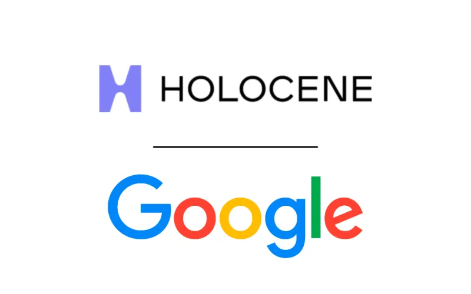

Sesuai namanya, teknologi direct air capture memungkinkan penangkapan karbon dioksida dari udara, kemudian memusatkannya untuk disimpan di reservoir bawah tanah. Teknologi ini terdengar seperti solusi hebat untuk mengurangi emisi karbon, namun harus diakui bahwa teknologi ini memiliki biaya yang tinggi dan sulit untuk berkembang dengan cepat.
Dengan dukungan dari Google, Holocene akan mampu menangkap dan menyimpan 100.000 ton karbon dioksida dari atmosfer pada awal tahun 2030-an, sekaligus membantu menyempurnakan teknologi DAC mereka. Google sendiri menyebutkan bahwa, meskipun teknologi ini masih mahal dan berada dalam tahap awal pengembangan, ia memiliki potensi besar untuk secara signifikan mengurangi biaya seiring berjalannya waktu.
Selain dukungan Google terhadap pendekatan inovatif Holocene dalam pengembangan DAC, Google juga akan memberikan dukungan finansial di muka sambil membuat komitmen jangka panjang untuk menerima kredit dari fasilitas Holocene dengan biaya rendah. Proyek Holocene ini juga memenuhi syarat untuk kredit pajak 45Q dari pemerintah AS, yang memberikan insentif investasi pada DAC dengan menyediakan kompensasi sebesar $180 per ton karbon yang dihilangkan, selain dari pembayaran oleh Google.